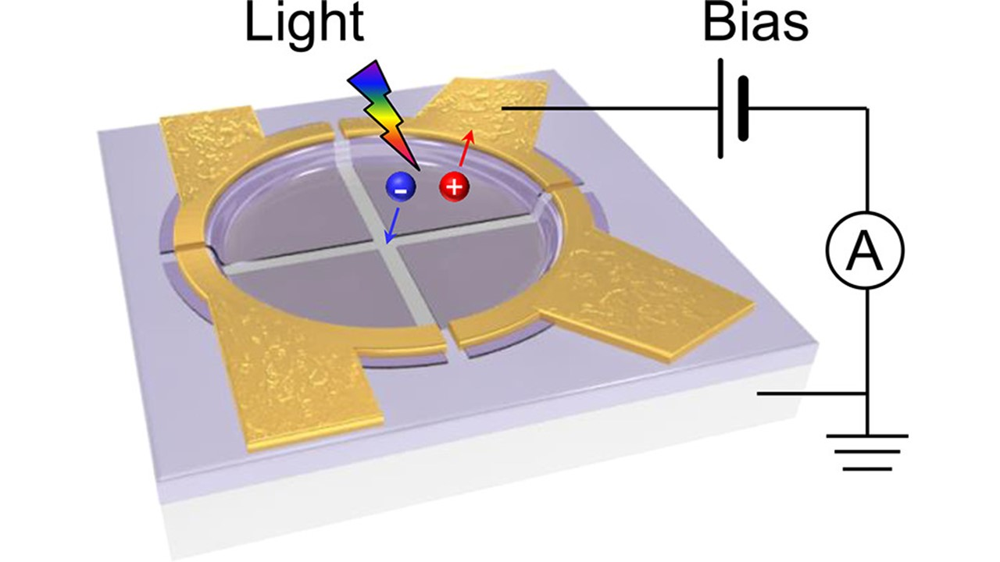
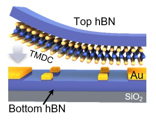
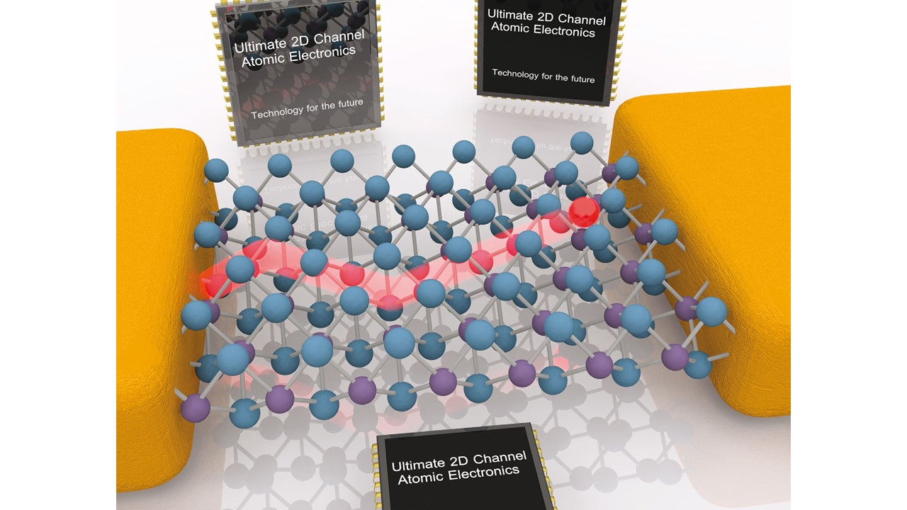

1: Advanced processing and integration techniques
- Non-invasive digital etching. We devised a protocol that allows for non-invasive and atomically digital etching of van der Waals transition-metal dichalcogenides through selective alloying via low-temperature thermal diffusion and subsequent wet etching. The non-invasive nature and atomic level precision of our etching technique are corroborated by consistent spectral, crystallographic, and electrical characterization measurements. The low-temperature charge mobility of as-etched MoS2 reaches up to 1200 cm2V-1s-1, comparable to that of exfoliated pristine counterparts. The entire protocol represents a highly precise and non-invasive tailoring route for material manipulation. 【Nat. Commun. 2022】.
- Clean BN-Encapsulated 2D FETs. We demonstrated the feasibility in directly integrating lithography-defined contacts into BN-encapsulated two-dimensional field-effect transistors (2D FETs), giving rise to overall device quality comparable to the state-of-the-art results from the painstaking pure dry transfer processing. This method is helpful for exploiting the intrinsic charge transport properties of 2D materials for advanced electronics.【ACS Appl. Mater. Interfaces. 2022】 .
- On-chip integration of patterned 2D materials. We developed an novel subsidence-assisted integration method that enables spatially precise integration of arrays of micropatterned two-dimensional (2D) crystals onto three-dimensionally structured Si/SiO2 substrates, by utilizing the flexibility of the atomically thin crystals. This method represents an attractive, low-cost system-on-chip strategy toward the realization of extended functions in silicon microelectronics.【ACS Nano 2019】.
- Graphene voltage inverter. We exploited a simple and novel method, by utilizing the spontaneous surface passivation of Al to define the gate/dielectric stacks, to fabricate complementary-like voltage inverters based on ambipolar graphene transistors. We are the first to achieve the great-than-unity voltage gains from graphene based voltage inverters and a match between the input and output voltages.【Nano Lett. 2010， ACS Nano 2011，Small 2011】.
-
Relevant publications
- Nat. Commun. 13(1):1844-1844 (2022).
- Appl. Phys. Lett. 120(27):27XXXX-27XXXX (2022).
- ACS Appl. Mater. Interfaces. 14(16):18697-18703 (2022).
- ACS Nano. 13(2):2654-2662 (2019).
- Small. 7(11):1552-1556 (2011).
- ACS Nano. 5(1):500-506 (2011).
- Nano Lett. 10(7):2357-2362 (2010).



2: Device physics of 2D FETs
- Theory of charge scattering. We developed a generalized Coulomb scattering model with strictly considering device configurative conditions, that is, asymmetric dielectric environments and lopsided carrier distribution in 2D FETs, to accurately describe the carrier scattering process and the origin of the thinning-induced mobility degradation. We reveal that the carrier scattering from interfacial Coulomb impurities is greatly intensified in extremely thinned channels, resulting from shortened Coulomb interaction distance between impurities and carriers. Such a pronounced factor may surpass lattice phonons and serve as dominant scatterers. This understanding offers new insight into the thickness induced scattering intensity and highlights the critical role of surface quality in electrical transport.【Nano Lett.2013, J. Phys. Soc. Jpn. 2015 】. A review on charge transport in 2D FETs can also be found.【Chem. Soc. Rev. 2016】.
- Metal/Semiconductor contact. We investigated the thickness scaling effect on the charge injection barrier at Au/MoS2 interfaces and observed the thickness reduction induced crossover of electrical contact therein. For MoS2 thinner than 5 layers, the contact resistivity sharply increases with as reducing MoS2 thickness, with the interfacial injection barrier varies from 0.3 to 0.6 eV, mainly governed by the quantum confinement effect. A full evolution diagram of energy level alignment is also drawn to elucidate the thickness scaling effect.【ACS Nano 2014】。A low-work-function metal ytterbium (Yb) was employed as contacts for WS2 to understand the realistic injection mechanism. Cryogenic electrical measurements reveal that the Yb/WS2 interfaces exhibit a strong pinning effect between energy levels, which results in the presence of significant tunneling injection in subthreshold regime and the inapplicability of the pure thermionic emission model to estimate the height of injection barrier.
-
Relevant publications
- Appl. Phys. Lett. 120(25):253505-253505 (2022).
- Chem. Soc. Rev. 45(1):118-151 (2016).
- ACS Nano. 8(12):12836-12842 (2014).
- Nano Lett. 13(8):3546-3552 (2013).
- ACS Nano. 6(8):7381-7388 (2012).


